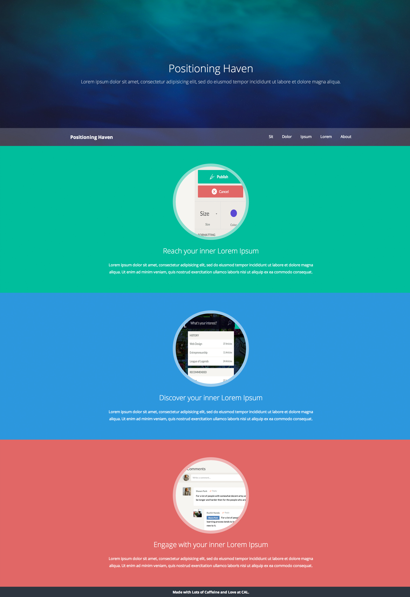

Our final product will look like this:
The cover slide is divided into three parts – the background, the content, and the navigation. We will try to put the content and the navigation on top of the background.
Background
First, let’s adjust the size of the background. Add “width: 100%; height: 500px;” to #cover-background so that it doesn’t cover the entire screen.Content
We can now proceed to the content. We will eventually vertically center the content, but first let’s assign it an arbitrary position. Since the content goes on top of background, add “position: absolute; width: 100%; top: 60px;” to #cover-content. We have “width: 100%;” because setting “position: absolute” will remove a div tag’s natural property of taking up as much width as possible (which is typically your entire browser width.) As such, we need to explicitly state that #header should take up the entire width.Typography
Let’s adjust some typography by adding “text-align: center; color: white;” to #cover-content, “font-size: 36px; font-weight: 300;” to #cover-title, and “font-size: 16px; font-weight: 300; color: rgba(255, 255, 255, 0.5); margin-top: 10px;” to #cover-subtitle. “Color: rgba(255, 255, 255, 0.5)” will set the color of the subtitle to be white, but with 50% opacity, making it look semi-transparent.Breathing space
If you hover over #cover-content, you will see that its height is 81px. To vertically center this element, change the value of its “top” property to “50%,” and add “margin-top: -40px;” which will push this element upward by roughly half of its height.Navigation
Moving on to navigation. For this website, we will have a navigation that will stick to the bottom of the cover. As such, we will give it “position: absolute; bottom: 0px; width: 100%;” to #cover-nav. This will put the navigation on top of the cover, and stick it to the bottom.Navigation Background
Let’s give the navigation more emphasis, separating it from the rest of the content, by adding “background: rgba(255, 255, 255, 0.2) color: white; padding: 20px 0px;” to #cover-nav. This will change the background to 20% opacity white, change the font color to white, and add vertical inner spacing of 20px.Navigation Width
Notice that the content is touching the edge of the screen. Add “width: 960px; margin 0px auto;” to #cover-nav-content. This will add a maximum width for the content inside the navigation.Alignment
We are now ready to align elements horizontally. Add “float: left” to #cover-nav-title to put the title to the left edge, and add “float: right” to .cover-nav-item to put the navigation items to the right edge. We have .clear elements with “clear: both” CSS properties attached to them at the end of a series of floated elements. This is because you must add “clear: both” at the end of a series of horizontally stacked elements; otherwise, the browser will continue to stack elements horizontally. Consider .clear elements as “period marks.”More Typography
For some final touch, let’s tweak the typography by adding “font-weight: 700;” to #cover-nav-title and adding “font-size: 13px; line-height: 22px; margin-left: 30px;” to .nav-item. We add “line-height: 22px;” because we must make sure that the text on .nav-item align properly with the title’s font-size. If you hover over #title from web inspector, you can see that it takes up a height of 22px.Navigation Position
Try to scroll your website. You will see that the navigation bar scrolls along with the website. We want the navigation bar to be fixed to that position. So yes, you should add “position: fixed; width: 100%;” to #header. We have “width: 100%;” because setting “position: fixed” will remove a div tag’s natural property of taking up as much width as possible (which is typically your entire browser width.) As such, we need to explicitly state that #header should take up the entire width.
Whew! Now things will get a little easier. Here, we will tweak the content – notice that we assigned these content slides a class of “.slide” and ids of “#reach, #discover, #engage.” We will use ids to assign CSS attributes unique to each slide, and use .slide class to assign CSS attribute that apply to all three of the slides.
- As always, you almost never want your content to touch the edges. Since this is a landing page, let’s give ample vertical spacing by adding “padding: 60px 0px;” to .slide. Then, give each slide unique background color by adding “background: #1abc9c;” to #reach, “background: #3498db” to #discover, and “background: #de6868;” to #engage.
- Let’s set the maximum width of the content by adding “width: 720px; margin: 0px auto;” to .container.
- The thumbnail picture looks quite bad right now. Let’s give it some
CSS magic by adding following properties to .slide-thumbnail:
- “width: 240px; height: 240px;” – Adjusts the size
- “margin: 0px auto” – Horizontal center
- “border-radius: 50%; overflow: hidden;” – Change to circle
- “border: 10px solid rgba(255, 255, 255, 0.5)” – Add 50% opacity white border around the circle.
- Now let’s adjust some typography. Improve the contrast and center the text by adding “text-align: center; color: white;” to .container to apply the changes to all the text inside the slide. Then, add “font-size: 24px; font-weight: 300; margin-top: 20px;” to .slide-title and add “font-size: 13px; line-height: 24px; margin-top: 20px;” to .slidedescription.
For the very last touch, add “background: #2f353f; padding: 10px 0px; font-size: 12px; font-weight: 700; text-align: center; color: white;” to #footer. By now, you should understand what each of these CSS properties would do.
You are all set! You can now gaze at the beauty you created all you want